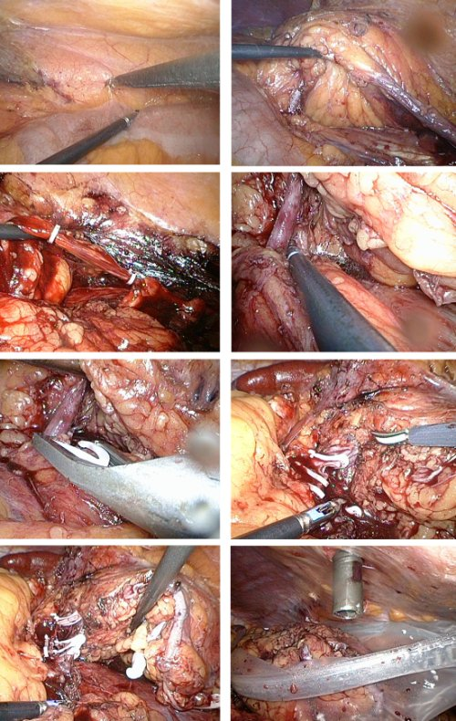
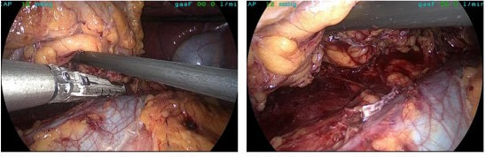

You are here: Urology Textbook
Laparoscopic Nephrectomy
Indications for Laparoscopic Nephrectomy
Benign diseases:
Nonfunctioning kidney with symptoms (e.g. bleeding, recurrent infections, nephrolithiasis, hydronephrosis, flank pain or renal hypertension).
Malignant diseases:
Renal cell carcinoma (up to 10 cm in size, depending on location), which are not suitable for partial nephrectomy.
Contraindications for Laparoscopic Nephrectomy
Do not perform radical nephrectomy if partial nephrectomy is technical possible, especially in patients with single kidneys, renal insufficiency and bilateral renal cell cancer or hereditary renal cell cancer.
Choose the open surgical technique for large tumors (size > 8 cm depending on location), lymph node metastasis or vein thrombus. Consider the retroperiteoscopic or open surgical approach after major abdominal surgery (e.g. hemicolectomy of the same side).
For benign diseases, the contraindications depend on the surgical risk, the gain of quality of life, the renal function of the other side in relation to the life expectancy of the patient.
Surgical Technique of Laparoscopic Nephrectomy
Preoperative Patient Preparation
- To improve the intra-abdominal vision, the diet should be limited to clear liquids (water, juices, broth) on the preoperative day. Additional enema on the evening before surgery.
- Perioperative antibiotic prophylaxis, especially if risk factors for wound infection are present.
- Insertion of a transurethral catheter.
- Gastric feeding tube during surgery to empty the stomach.
Surgical Approach Via Laparoscopy
Patient Positioning:
The patient is positioned in a lateral position at an angle of 45 degrees and with a mild lumbar hyperextension. A vacuum mattress enables a secure fixation of the patient, even if the operation table has to be tilted.
Trocar positions:
Pneumoperitoneum is created with the help of a mini-laparotomy or with the Veress needle next to the umbilicus (camera trocar 10 mm). A second 10 mm trocar is inserted slightly caudal to the navel lateral to the ipsilateral rectus. A 5 mm trocar is inserted between xiphoid and umbilicus in the midline. An additional 5 mm trocar is inserted (if necessary) for retraction of liver, colon or spleen, e.g. below the xiphoid or rib cage.
Hand-Assisted Technique:
With the help of a special hand-port, one hand of the surgeon can enter the abdominal cavity and help with the dissection and retraction. Disadvantageous are the high costs of the disposable item. The hand-assisted technique can also be performed without the hand-port: adapt the incision for your hand size, the gas leak can be limited by means of moist surgical towels. The incision for the hand (port) is used for intact organ retrieval.
Surgical Approach to the Kidney:
Start with a laterocolic incision to mobilize the colon to the medial. The correct layer between meso of the colon and retroperitoneum is found most easily below the kidney. On the right side, the duodenum is dissected from the vena cava (Kocher maneuver). After sufficient colon mobilization, identify and transect the ureter at the crossing with the iliac vessels. Transect the testicular (ovarian) vein on the left side below the lower pol of the kidney, the vessel can be spared on the right side. On the left side, the aorta is followed cranially, on the right side the vena cava, until the renal hilus is reached. Traction on the ureter to the lateral facilitates the dissection. In case of a suspected malign tumor, lymph node dissection below the renal hilus is now possible.
|  |
Transection of the Renal Vessels:
Isolate the renal vessels and send suspicious lymph nodes for pathological examination. The artery can be transected with the help of strong clips, secure the proximal stump with 2–3 clips. The vein can be transected (depending on size) proximal to the gonadal vein with special clips or with the help of a linear stapling device [fig. transection of the renal vein]. The linear stapling device may also be used for the artery, especially in difficult cases. It is often possible to spare the suprarenal vein on the left side.
|  |
Dissection of the Upper Pole:
After transection of the renal vessels, the dissection is continued along aorta/vena cava until the adrenal gland is identified. The fatty tissue between adrenal gland and capsula adiposa is incised to spare the adrenals. Be careful not to injure the lienal vessels or the pancreatic tail.
Adrenalectomy:
If oncologically necessary, the adrenalectomy can be carried out without problems with the laparoscopic technique (en bloc with the kidney). The adrenal vessels are clipped or coagulated depending on their size.
Intact Organ Retrieval:
After complete mobilization of the kidney, the organ is deposited in a retrieval bag, which was inserted through the 10 mm trocar. Intact organ retrieval requires a sufficient muscle-spitting incision of the lower abdominal wall. Drainage of the renal fossa is optional.
Regional lymphadenectomy:
Lymphadenectomy is not necessary for T1–2 tumors without suspicious lymph node enlargement, since no survival benefit could be demonstrated in a large EORTC study (Blom et al, 1999 and 2009). Some authors advocate on the basis of retrospective studies a lymphadenectomy if advanced tumors or enlarged lymph nodes are present. For enlarged lymph nodes, limited regional lymphadenectomy can be performed laparoscopically or open surgery should be performed.
Morcellation:
Kidney morcellation should be discouraged in cases with suspected malignancy. For the majority of all reported cases with port site metastases, morcellation was used instead of intact organ retrieval. Techniques that prevent tumor cell spillage have been described but not prospectively tested.
Care after Laparoscopic Nephrectomy
General measures:
Early mobilization. Respiratory therapy. Thrombosis prophylaxis. Laboratory controls (Hb, creatinine). Wound inspections.
Analgesia:
Analgesics according to the ladder of WHO pain management, e.g. metamizol and tramadol.
Drains and catheters:
- Wound drainage 1–2 days (optional)
- Bladder catheter 1 day (optional)
Complications
In principle, complication of laparoscopic nephrectomy are comparable to open nephrectomy [see section radical nephrectomy ]. In comparative studies, the laparoscopic technique reduces complications such as pain, bleeding, paralytic ileus, wound infection and incisional hernia.
| open partial nephrectomy | Index | Abbreviations |
Index: 1–9 A B C D E F G H I J K L M N O P Q R S T U V W X Y Z
References
 Deutsche Version: Laparoskopische Nephrektomie
Deutsche Version: Laparoskopische Nephrektomie